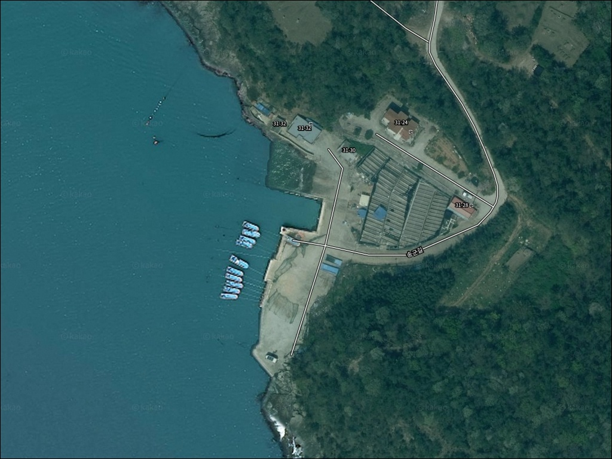
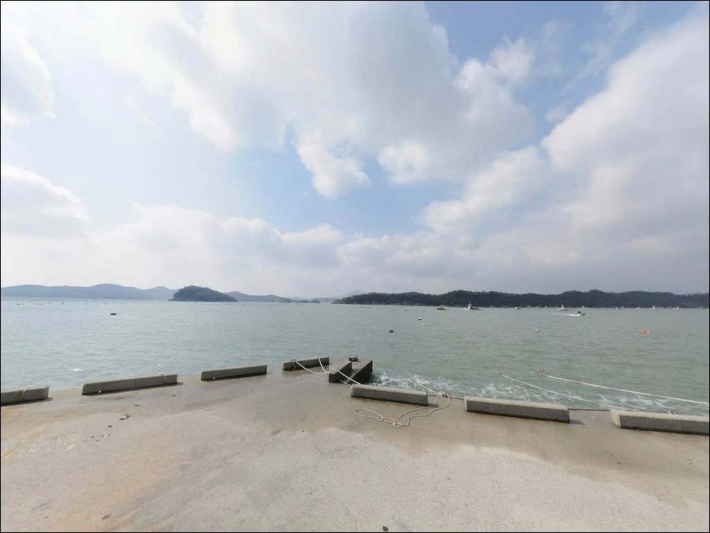
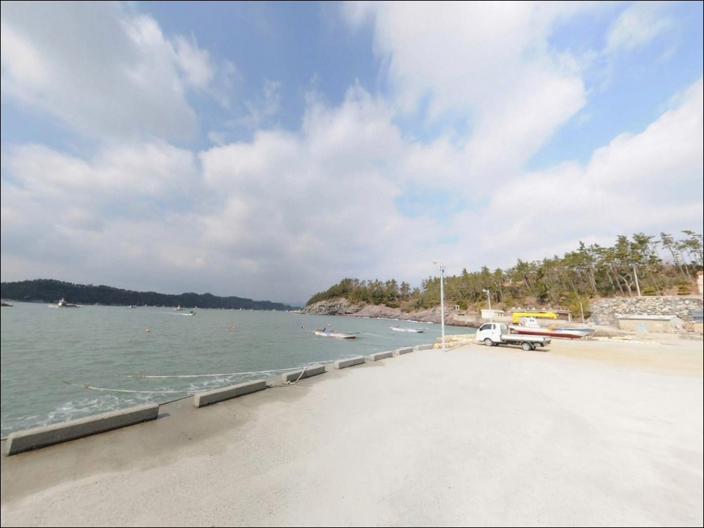
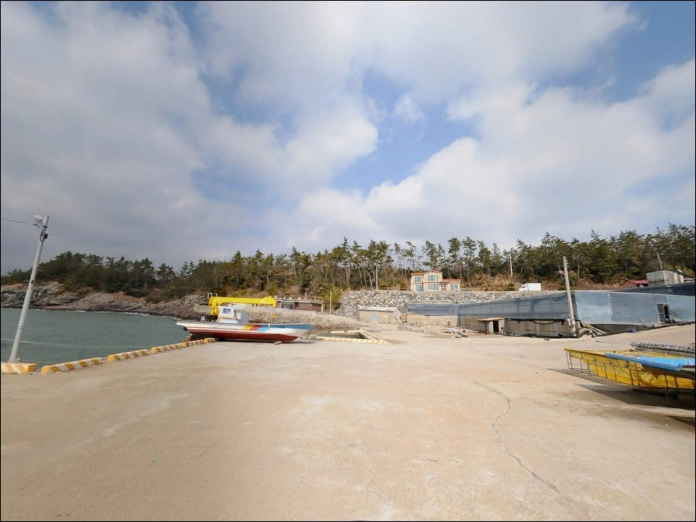
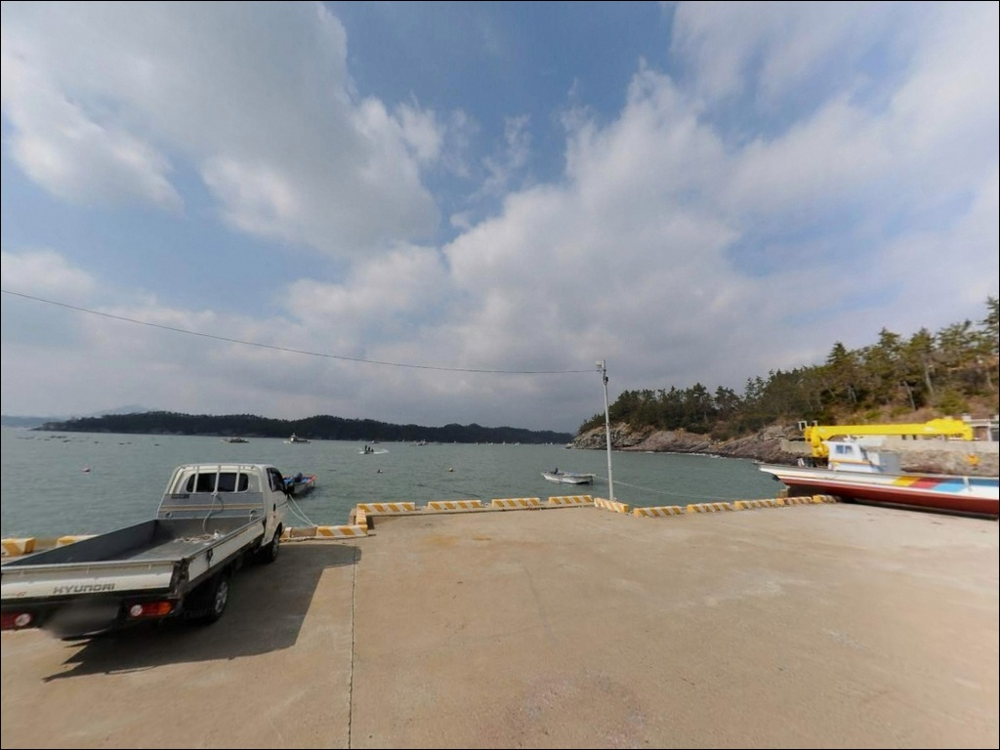
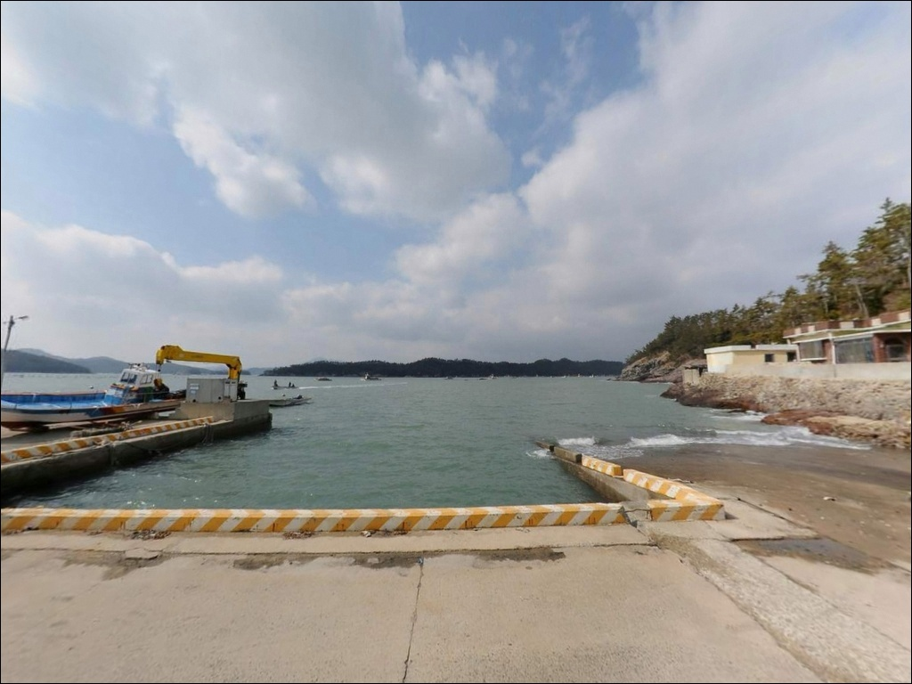
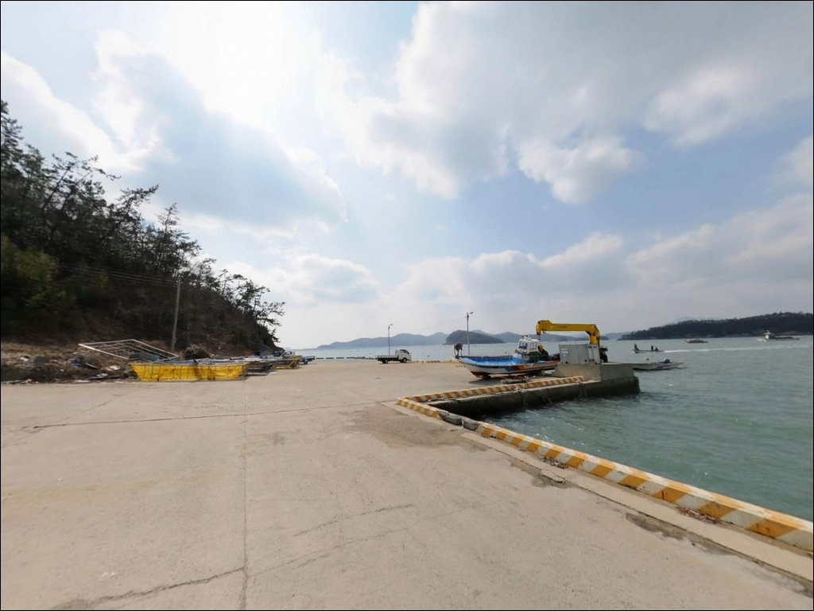
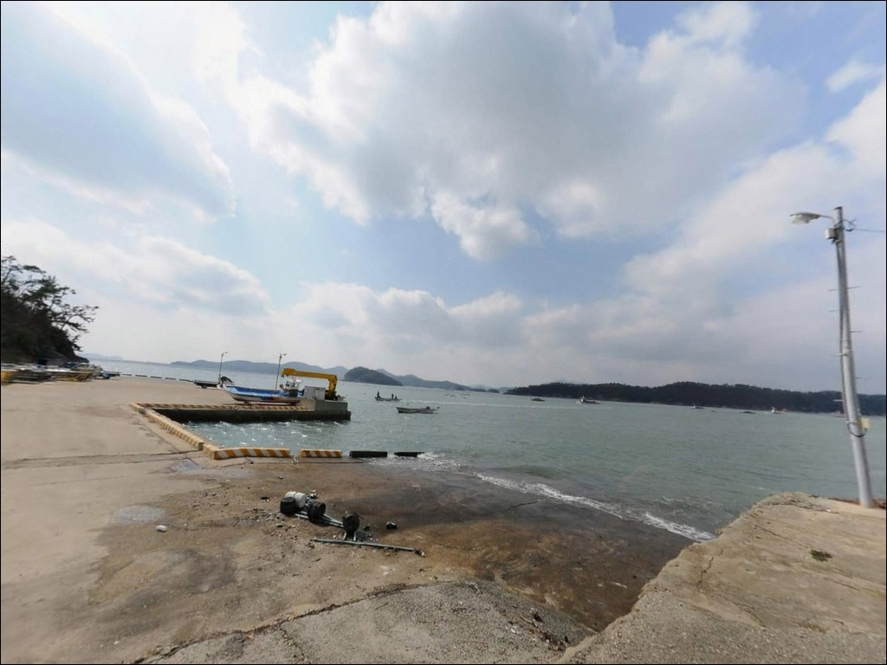
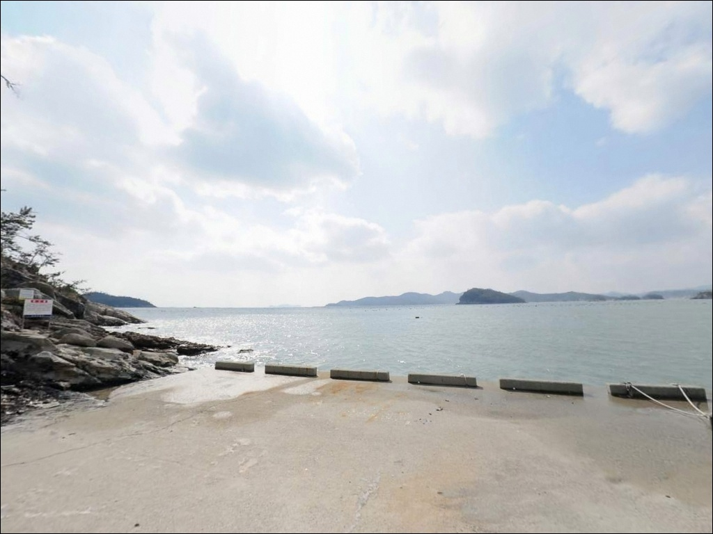

초사리 선착장, 진도 전남 진도군 고요함이 매력인 차박, 낚시 감성 장소
이 페이지에는 광고(제휴 링크 포함)가 있으며, 광고 링크를 통해 구매하면 운영자가 판매 수익 또는 수수료를 받을 수 있습니다. 포인트 사진: 카카오맵 스카이뷰·로드뷰. 이 페이지의 지도·사진 이미지는 카카오맵의 실제 서비스 이미지와 다를 수 있습니다.


포인트 안내
초사리 선착장
전남 진도군 의신면 초사리 642-1
물때를 확인하지 않고 초사리 선착장을 찾으면
조류가 거의 없는 얕은 수면에서 채비를 끌다가
빈손으로 돌아오기 쉽습니다.
초평항 일대는 수심이 얕은 구조라
물때가 맞지 않으면 어떤 채비도 제 역할을 하기 어렵습니다.
초사리 선착장은 전남 진도군 의신면에 자리한
국가어항 초평항의 항내 선착장입니다.
2017년 국가어항으로 지정된 초평항은
방파제·물양장·호안 시설을 갖추고 있으며,
모도로 향하는 도선이 출항하는
지역 거점 어항으로 운영됩니다.
진도 낚시인들 사이에서는 원투, 찌낚시, 루어, 에깅이
모두 가능한 복합 포인트로 알려진 곳입니다.
이 글은 초사리 선착장의 진입 여건, 차박 가능성,
지형 기반 낚시 분석, 어울리는 낚시 방식에 집중합니다.
조황 단정이나 특정 어종 보장은
이 글의 범위에 포함되지 않습니다.

1. 진입 동선과 포인트 접근성
초사리 선착장이 위치한 초평항은
의신면 소재지에서 해안 방향으로
포장도로를 따라 이어지는 구조입니다.
진도읍에서 의신면을 거쳐 진입하는 경로가 일반적이며,
주요 구간은 포장 상태가 양호해
승용차 기준 접근에 큰 어려움은 없는 편입니다.
항구 특성상 물양장 앞 도로가 비교적 넓게 정비되어 있어
회차 자체는 어렵지 않습니다.
다만 2021년 착공된 항만 정비 공사 구간이 있어
현장 도로 여건은 방문 시점에 따라 달라질 수 있습니다.
초행이라면 출발 전 위성지도로 진입로 상태를 먼저 확인하는 편이 좋습니다.
주차는 선착장 접안부 옆 물양장 공터를 주로 활용하는 방식입니다.
모도행 도선이 방파제 끝에서 승하선하는 구조라
배 시간대에는 승객 차량이 일시적으로 집중됩니다.
도선 운항 시간을 미리 파악해 주차 위치를 잡는 것이
현장 운용의 기본입니다.

2. 차박 환경과 야간 체류 여건
초사리 선착장은 차박 정보 글에서
선착장 일대가 무료 차박 가능지 중 하나로 언급되는 곳입니다.
항구 주변으로 일부 가로등이 있어 완전 암흑은 아니고,
야간 차량 통행도 많지 않은 편입니다.
다만 쏠비치 리조트와 어촌 마을이 인접한 구조라
완전한 오지 분위기와는 다소 거리가 있습니다.
어업 활동이 활발한 국가어항이라는 특성상
물양장 앞 공간은 어구·그물 적치 여부에 따라
실제 주차 가능 면적이 달라집니다.
차박을 메인 목적으로 삼는다면
현장에서 공간을 확인한 뒤 결정하는 것이
빈 자리를 확보하는 현실적인 방법입니다.
차박이란 차량을 숙박 공간으로 활용하며
현장에서 하룻밤 머무는 여행 방식입니다.
낚시를 마치고 조용히 하룻밤 머무는 용도로는
나쁘지 않지만, 어선 이동 동선과 겹치지 않는 자리를
먼저 파악하는 것이 기본입니다.


3. 주변 편의시설 및 인프라 현황
초사리 선착장 반경 3km 이내에는
쏠비치 호텔&리조트 진도가 위치하며,
리조트 내에 24시간 운영 편의시설이 갖춰져 있습니다.
심야 시간대에는 무인 방식으로 전환되어
새벽 시간에도 기본 물자 수급이 가능합니다.
식료품과 물 수급은 쏠비치 리조트 편의점을
기준으로 계획할 수 있습니다.
GS25 진도 의신점이 초사리 일대에 위치하며
24시간 운영 이력이 확인되지만,
운영시간은 변동될 수 있어 출발 전 확인을 권장합니다.
항구 인근으로 낙지 요리·해산물 위주 식당과 횟집이
밀집해 있어 식사 해결은 어렵지 않은 편입니다.
응급 상황 발생 시 진도읍 방향으로 이동이 필요합니다.
의신면 보건지소 위치와 인근 약국·병원 정보는
출발 전 검색으로 미리 확인해 두는 편이 안전합니다.

4. 진입 전 반드시 챙겨야 할 준비사항
초사리 선착장 방문 전에 먼저 확인할 것은 물때입니다.
초평항 일대는 수심이 얕은 구조라
조류가 살아나는 타이밍이 아니면
채비 컨트롤 자체가 의미 없어집니다.
바다타임에서 의신면 기준 물때를 확인하고
초들물에서 중들물 구간을 기준으로 입장 시각을
잡는 것이 이 포인트를 제대로 공략하는 방법입니다.
초들물에서 중들물로 넘어가는 구간이
초평항 일대에서 조류가 살아나는 타이밍입니다.
이 타이밍을 기준으로 출발 시각을 역산해두면
현장에서 조류 없이 기다리는 시간 낭비를 줄일 수 있습니다.
선착장 주변으로 구조물과 암초가 혼재하는 구간이 있어
채비 손실이 생길 수 있으니
여분 채비는 넉넉하게 준비하는 편이 좋습니다.
어선 이동 동선과 어구에 접촉하지 않도록
자리를 잡는 것이 기본 매너이며,
야간 낚시 시 헤드랜턴과 구명조끼는 반드시 챙겨야 합니다.

5. 얕은 수심에서 조과를 살리는 물때 타이밍
초사리 선착장이 속한 초평항은
방파제·물양장·호안 시설을 갖춘 항구형 어항입니다.
항내 선착장 쪽은 외해의 직접적인 파랑이 줄어드는 구조이며,
수심은 0.5~2m 수준으로 전반적으로 얕은 편입니다.
바닥은 모래와 펄이 혼합된 지형이며,
방파제 끝단과 수로 방향으로 갈수록 수심이 깊어지는 경향이 있습니다.
이 일대는 꺾인 방파제(A포인트), 일자 방파제 외항 끝단(B포인트),
초사리 해안도로 선착장(C포인트)으로 구분해
낚시 포인트가 형성되어 있습니다.
방파제에서 모도 방향으로 캐스팅하는 패턴이 자주 활용되며,
수로와 방파제 끝이 만나는 지점이
가장 먼저 탐색해볼 만한 자리입니다.
항내 선착장은 외해 파도를 막아주는 방파제 덕에
기상이 나쁜 날에도 비교적 안전하게
자리를 잡을 수 있는 구조입니다.
다만 물때가 맞지 않으면 조류가 거의 없어
어떤 채비도 입질을 끌어내기 어렵습니다.
최신 조황은 가기 전에 꼭 검색해 보시기 바랍니다.


6. 초평항 초사리 선착장에 어울리는 낚시 스타일
이 포인트에서 가장 안정적으로 운용할 수 있는 방식은
원투낚시입니다.
모래와 펄이 혼합된 바닥 구조는
붕장어, 노래미, 도다리류를 노리기에 적합한 조건입니다.
방파제 끝단에서 수로·모도 방향으로 캐스팅하는 방식이 자주 활용되며,
초들물 타이밍에 입질이 집중되는 경향이 있습니다.
릴찌낚시도 이 포인트 구조에 잘 맞는 스타일입니다.
방파제 꺾인 구간이나 외항 끝단 쪽에서
조류가 흐를 때를 노리는 방식으로,
가을에서 겨울로 넘어가는 시즌에 감성돔을 기대해볼 수 있는
지형 조건을 갖추고 있습니다.
방파제 외항과 항내 경계선이 감성돔 자리로 유망한 구간입니다.
루어낚시와 에깅도 함께 시도해볼 만합니다.
원투낚시란 무거운 봉돌을 달아 멀리 캐스팅한 뒤
바닥층 어종을 노리는 낚시 방식입니다.
선착장 구조물 경계부에서 볼락과 우럭을
소형 지그헤드로 탐색하거나,
조류 소통이 살아 있는 시간대에 수로 방향으로
갑오징어 에깅 채비를 운용하는 방식이 이 구조에 어울립니다.

7. 대안 포인트와 플랜 B 동선
초사리 선착장이 여의치 않을 때
가장 먼저 이동해볼 만한 곳은
같은 의신면에 위치한 수품항입니다.
국가지정어항으로 지정된 수품항은
해양낚시공원이 별도로 운영되고 있으며,
방파제 규모와 낚시 여건이
초사리 선착장보다 안정적으로 알려진 포인트입니다.
수품항 동방파제와 중방파제는
각기 다른 조류 환경을 만들어
포인트 선택의 폭이 넓습니다.
인근에 낚시점도 있어
현장에서 부족한 소품을 보완하는 것도 가능합니다.
접도연육교를 건너 수품리로 이동하는 동선이
가장 일반적인 진입 방법입니다.
차박 여건이 마땅치 않다면
고군면 금계리 가계해수욕장 방면이 대안이 됩니다.
주차 공간이 넓고 바다 전망이 열려 있어
진도 대표 차박지로 여러 글에서 소개됩니다.
다만 관광지 구역 특성상
지정 구역 외 야영·취사 제한 여부를
현장 안내판에서 먼저 확인하는 것이 필요합니다.

물때와 진입 여건,
두 가지만 갖추면 초사리 선착장이
제 역할을 하는 포인트입니다
원투, 찌낚시, 루어, 에깅을 하나의 포인트에서
상황에 따라 바꿔가며 공략할 수 있다는 점이
초사리 선착장의 실질적인 장점입니다.
다양한 채비를 갖추고 물때 타이밍을 정확히 맞추는
낚시인이라면 이 포인트 구조가 잘 맞습니다.
반면 수심이 얕아 물때를 잘못 맞추면
조류 자체가 살아나지 않아
어떤 채비를 써도 입질을 끌어내기 어렵습니다.
바다타임으로 물때를 먼저 확인하고,
항만 공사 진행 상황과 도선 운항 시간까지
파악해두면 현장에서 당황하는 일을 줄일 수 있습니다.
쏠비치 리조트 편의시설이 인근에 갖춰져 있고
항구 주변으로 식당과 편의점도 있어,
완전 자급 체제가 아니어도 방문 부담은 낮은 편입니다.
낚시를 마친 뒤 선착장 옆에 차를 세우고
하룻밤 조용히 머무는 차박 일정으로도
자연스럽게 엮을 수 있는 포인트입니다.